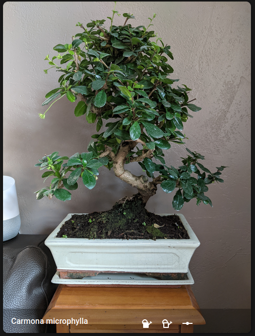

Arrosage
Objectif
Se rappeler de la date du dernier arrosage de mon bonsai en scannant un tag NFC présent dans la soucoupe et envoyer une notification de rappel quand la date de prochain arrosage est atteinte.
Matériel utilisé
- 1 badge NFC pouvant être écrit par Home Assistant
- 1 téléphone portable sur lequel est installée l'application mobile Home assistant pour recevoir la notification.
Mise en oeuvre
Paramétrage du délai entre deux arrosages
input_number:
interval_arrosage:
name: Interval en jour entre 2 arrosages
initial: 3
min: 1
max: 7
step: 1
mode: box
Date dernier/prochain arrosage
input_datetime:
date_arrosage:
name: date dernier arrosage
has_date: true
has_time: false
date_next_arrosage:
name: date prochain arrosage
has_date: true
has_time: false
Lecture du badge NFC
automation:
- id: 'update_date_arrosage'
alias: La balise bonsai est analysée
description: ''
trigger:
- platform: tag
tag_id: 2fbab09d-6347-4042-8165-1a35c0877a7f
condition: []
action:
- service: input_datetime.set_datetime
data:
datetime: "{{ now().strftime('%Y-%m-%d') }}"
entity_id: input_datetime.date_arrosage
- service: input_datetime.set_datetime
data:
datetime: "{{ (now() + timedelta(days=states('input_number.interval_arrosage')| int + 1)).strftime('%Y-%m-%d') }}"
entity_id: input_datetime.date_next_arrosage
mode: single
Notification
automation:
- id: 'rappelArrosage'
alias: rappel arrosage Bonsai
trigger:
- platform: time
at: "17:00:00"
condition:
- condition: state
entity_id: input_boolean.mode_vacance
state: 'off'
- condition: template
value_template: "{{ states('sensor.date') > states('input_datetime.date_next_arrosage') }}"
action:
- service: notify.mobile_app_pixel_2_xl
data:
message: 'Il est temps d'arroser le Bonsai'
- service: input_datetime.set_datetime
data:
datetime: "{{ (now() + timedelta(days=1)).strftime('%Y-%m-%d') }}"
entity_id: input_datetime.date_next_arrosage
Interface
type: picture-glance
title: Carmona microphylla
image: ./local/bonsai.jpg
entities:
- entity: input_datetime.date_arrosage
- entity: input_datetime.date_next_arrosage
- entity: input_number.interval_arrosage
entity: input_datetime.date_arrosage
